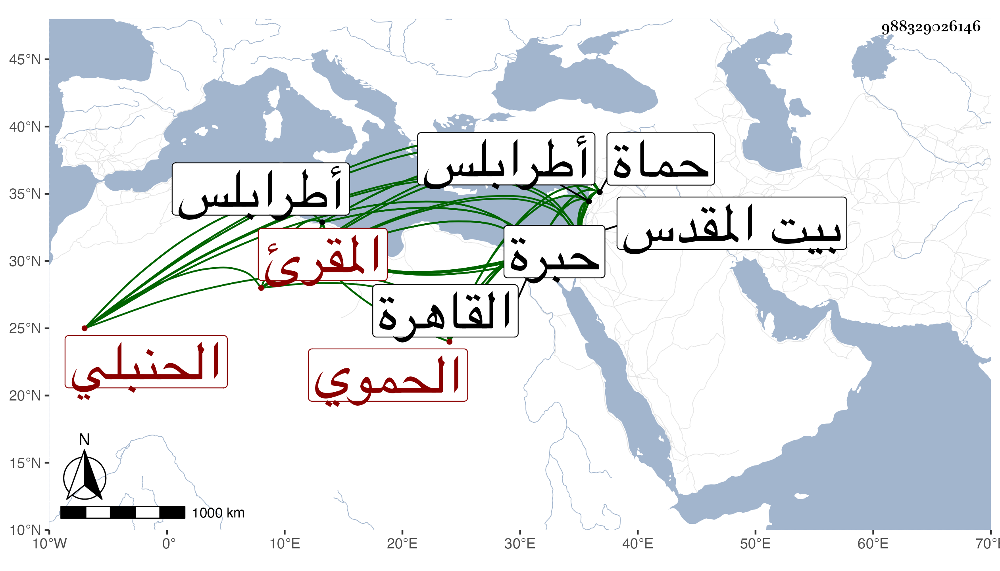

0902Sakhawi.DawLamic.ITO20230111-ara1.EIS1600.988329026146
Biography ID: 988329026146
109
أحمد بن علي بن محمد بن نصر الله بن علي بن محمد بن نصر الله الدركواني الأصل الحموي الحنبلي المقرئ ، ودركو بفتح الدال المهملة قرية من قرى حماة ، ويعرف كأبيه وجده بالخطيب لكون جده كان خطيب دركوا . كان مولد أبيه بها ونشأ بها ثم تحول منها إلى حماة فولد له الشهاب هذا في سنة ثمان وأربعين وثمانمائة ومات هو في سنة إحدى وستين فحفظ القرآن وجوده على عبد الرحمن الكازواني نسبة لقرية كازو من حماه الحموي وعليه قرأ البخاري بل تلا عليه إفرادا وجمعا للسبع وأجاز له وكذا تلا معظم البقرة للسبع بالقاهرة مع الأزرق أحد رواة ورش والأصبهاني أحد رواة قالون على الزين جعفر السنهوري وقرأ في المحرر من كتبهم على قاضي طرابلس العلاء بن باديس العلاء الحموي قبل انتقاله لطرابلس وكذا قرأ عليه وعلى الشمس بن قريحان في العربية وعليهما معا في البخاري وقرأ فيه أيضا على الشمس بن الحمصي الغزي بها ، وحج وزار القدس والخليل وقدم القاهرة مرارا وقرأ فيها البخاري على الديمي ثم اجتمع بي أواخر سنة خمس وتسعين فقرأ علي من أول كل من الكتب السنة وسمع من مسند إمامه أحمد وإمامنا الشافعي وغير ذلك وقرأ على الخيضري وغيره وخطب بالجامع الكبير ببلده نيابة وقرأ فيه على العامة وتكسب بالتجارة على وجه جميل .
